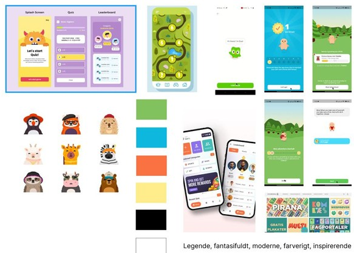
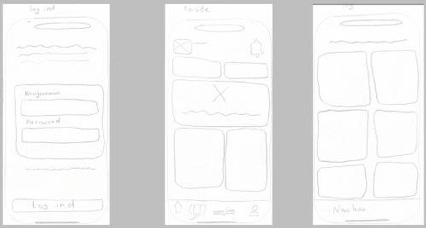
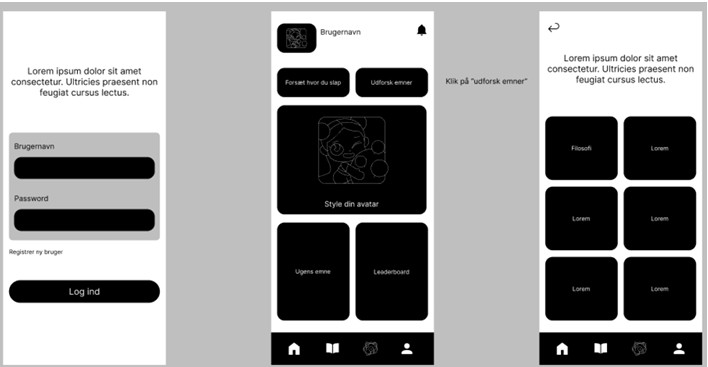
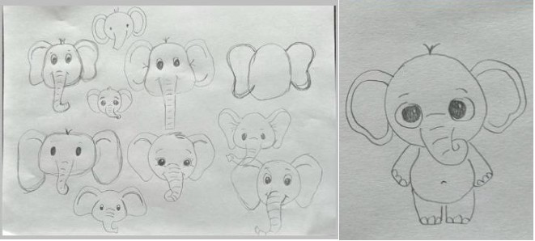
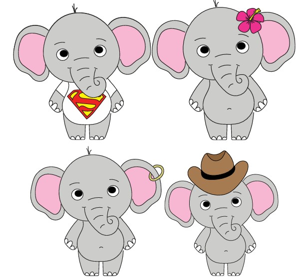
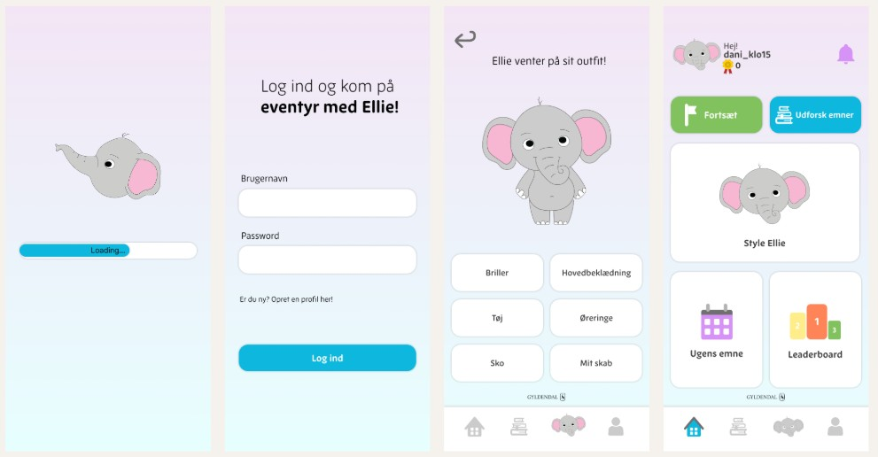

Værktøjer og programmer jeg har brugt i projektet:


Design af læringsapp - Gyldendal
- studieprojekt
Dette studieprojekt blev udviklet som et gruppeprojekt med fokus på at skabe en læringsapp til børn, hvor tunge og komplekse emner som filosofi kunne formidles på en mere legende og engagerende måde gennem gamification.
Appen tog udgangspunkt i undervisningsmateriale og bøger fra skolen, hvor eleverne gennem spil og interaktive opgaver kunne teste deres viden. Projektet blev blandt andet visualiseret gennem inspiration fra "Sofies verden", hvor filosofi blev gjort mere tilgængeligt og spændende for børn.
I appen havde brugerne mulighed for at udvikle deres egen karakter, “Ellie”, samt sammenligne deres fremskridt og resultater med venner, hvilket skulle være med til at motivere læring gennem sociale og spilbaserede elementer.
Til projektet fik vi udleveret research og målgruppeanalyse og havde herefter til opgave at udvikle en kreativ og brugervenlig læringsapp. Vi arbejdede sammen om idéudvikling, skitser, wireframes og mockups for at skabe struktur og brugeroplevelse i appen.
Min rolle i projektet var primært det grafiske arbejde, hvor jeg designede appens visuelle elementer og udviklede små animationer, der skulle gøre oplevelsen mere levende og engagerende for målgruppen. Jeg arbejdede med hele processen fra de første skitser til færdige grafiske løsninger og animationer med fokus på at skabe et legende, intuitivt og visuelt sammenhængende univers til appen.
Værktøjer og programmer jeg har brugt i projektet:
Se alle mockups og prøv prototypen her





